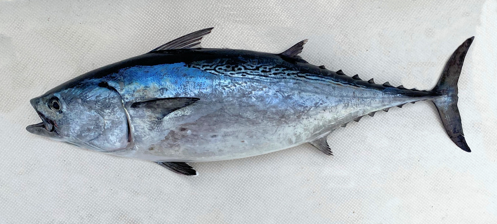

Euthynnus alletteratus (Ντάσκα)

Η ντάσκα είναι μικρό τονοειδές της οικογένειας Scombridae, με επιστημονική ονομασία Euthynnus alletteratus (little tunny), που σχηματίζει κοπάδια στις μεσογειακές και ατλαντικές ακτές.
Μορφολογία
Έχει τυπικό «σώμα τόνου»: στιβαρό, ατρακτοειδές σώμα, δυνατή διχαλωτή ουρά και δύο ραχιαία πτερύγια με σειρά από μικρά πτερύγια (finlets) προς την ουρά. Φτάνει περίπου 50–80 cm συνήθως (μέγιστο ~120 cm, 17 kg), με χαρακτηριστικές λοξές σκούρες γραμμές στη ράχη και 3–7 σκούρες κηλίδες ανάμεσα σε θωρακικά και κοιλιακά πτερύγια.
Πού τη συναντάμε
Η ντάσκα ζει σε θερμά τροπικά και υποτροπικά νερά του Ατλαντικού, της Μεσογείου και της Μαύρης Θάλασσας, κυρίως σε νεριτικά, παράκτια πελαγικά νερά. Κινείται συνήθως από την επιφάνεια μέχρι περίπου 150 m βάθος, κοντά στην ακτή αλλά και λίγο πιο ανοιχτά, ακολουθώντας κοπάδια μικρότερων ψαριών
Διατροφή
Πρόκειται για ευκαιριακό σαρκοφάγο θηρευτή που τρέφεται με μικρά πελαγικά ψάρια (κυρίως κλουπεοειδή όπως γαύρος και σαρδέλα), αλλά και με καρκινοειδή, καλαμάρια και άλλα μαλάκια. Η σύνθεση της τροφής αλλάζει εποχικά: σε κάποιες περιοχές υπερισχύουν τα καρκινοειδή τον χειμώνα και τα ψάρια την άνοιξη–καλοκαίρι, κάτι που δείχνει προσαρμογή στη διαθέσιμη λεία.
Συνθήκες εκτροφής
Η Euthynnus alletteratus δεν εκτρέφεται εμπορικά, αλλά μελέτες σε συγγενικά είδη Euthynnus δείχνουν ότι μπορούν να διατηρηθούν σε μεγάλες δεξαμενές με συνεχή ροή και υψηλή οξυγόνωση, όπου κολυμπούν αδιάκοπα σε κυκλική πορεία. Για επιτυχημένη διατήρηση απαιτούνται σταθερές θερμοκρασίες εντός του φυσικού εύρους του είδους, καλή ποιότητα νερού και δίαιτα πλούσια σε πρωτεΐνες (ψάρια, καλαμάρια ή κατάλληλες τροφές), όμως η εκτροφή του παραμένει σε ερευνητικό επίπεδο.